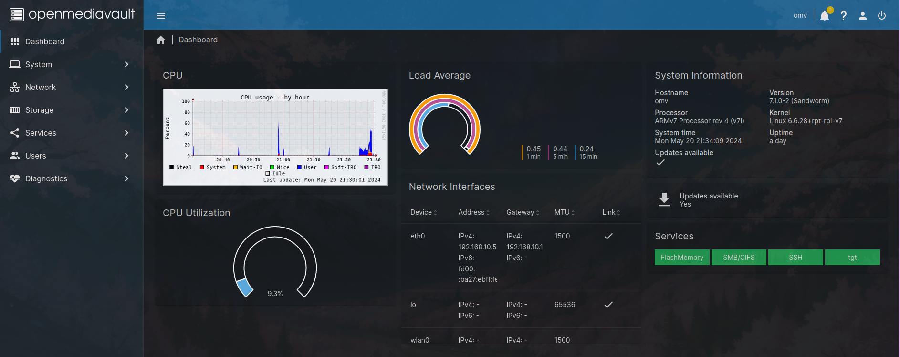

File Sharing
Network Attached Storage
I used Openmediavualt (OMV) to make a NAS out of my Raspberry Pi 3B+, to which I simply attached a HDD.
 Above: Screenshot of my OMV Dashboard
Preparations
- Install Raspberry Pi OS Lite
- Install OMV using the installation script.
- Wipe the drive(s) you wish to connect to your Pi. I did it like this:
- Connect drive to PC, find out the device name by using
sudo fdisk -lorlsblk - Use dd command to write zeros to the drive:
sudo dd if=/dev/zero of=/dev/sbdX bs=5M status=progress
- Connect drive to PC, find out the device name by using
- Log onto the OMV Web GUI with the default
adminuser andopenmediavaultpassword, then change them and setup a new user Make sure to put that user in theSSHgroup in theUsersTab, to ensure SSH connectivity - I installed the
openmediavault-sharerootfsplugin, to be able to share folders located on the root filesystem
Note
You will still only be able to manage your disks, shares etc. with the admin user
- Check if disk is found under
Storage > Disks - Create and mount a file system on that disk under
Storage > File Systems- I used ext4
SMB Share Setup
- Create a folder on the disk under
Storage - Shared Folders - Make the SMB share browseable and configure other settings like minimum SMB version and permission inheritance under
Services > SMB/CIFS > Settings - Create the SMB Share in
Services > SMB/CIFS > Shares - Then add the share as a network drive in Windows, using the user credentials created before
iSCSI LUN Setup
- Install the
openmediavault-tgtplugin - Go to
Services > tgt > Settings > Check "Enable"
Create an iSCSI image
There's two ways of doing this, by terminal or in the Web GUI.
Connect to the terminal locally or via SSH, and make a directory for the image, eg. sudo mkdir /iscsiimg, then use dd to make the empty image: sudo dd if=/dev/zero of=/iscsiimg/lun1.img bs=1M count=5120
Note
Don't forget the count parameter, to only make an image of your desired size (it counts blocks of the size specified in the bs parameter). Otherwise dd will copy an infinite stream of zeroes and wipe everything else out.
Go to Services > tgt > Images and click "Create", then enter the full path you want the image to have, eg. "/iscisimg.lun1.img".
Create an iSCSI Target
Go to Services > tgt > Targets and configure a target, with the image you just created as 'Backing Store'. As initiator I used my laptop and entered its hostname.
Note
You also need to check the "Enabled" box for each target, otherwise it won't be found by the initiator.
On the initiator:
- Install package
open-iscsi - Start iSCSI daemon with
sudo systemctl start iscsid, if you want it to start on system startup automatically usesudo systemctl enable iscsid - Discover the iSCSI target: run
sudo iscsiadm -m discovery -t st -p <OMV IP Adress> - Login using command
sudo iscsiadm -m node -T <ISCSI Target IQN> -p <OMV IP Adress> --login. You can find the target's IQN in the OMV web GUI in thetgt > Targetspage next to the name of the target you just created. - Use the command
lsblkto see the device name the LUN has on your system. - Create a directory and then mount the LUN to it (
sudo mkdir /mnt/iscsi, thensudo mnt /dev/sdX /mnt/iscsi) - I got an error saying the image has the 'wrong fs type', as it has no filesystem configured, so I simply used
sudo mkfs -t ext4 /dev/sdXto give it an ext4 filesystem - You can now put files here. You can logout with
sudo iscsiadm -m node -T <ISCSI Target IQN> -p <OMV IP Adress> --logout, and also just unmount and mount the LUN if you wish.
Samba
I also created a Samba Share on my Raspberry Pi for my home network.
To do this, install the packages samba samba-common smbclient and make a backup of the /etc/samba/smb.conf file, then create a new one with your custom entries.
Mine simply looks like this:
[global]
workgroup = WORKGROUP
security = user
client min protocol = SMB2
client max protocol = SMB3
map to guest = Bad User
guest account = nobody
[Samba]
path = /mnt/sambavolume
read only = no
guest ok = yes
sudo chmod 777 /mnt/sambavolume. If you want to only enable access for certain users, don't enable guest access in the configuration file and instead set the valid users = option for the samba share. Then use sudo smbpasswd -a <user> to set login credentials to the share for the user.
Creating a logical volume for the Samba file share
I wanted to set a size restriction for the Samba file share, so I decided to map it to a logical volume.
You can map the Samba file share to any directory you want using the path = option.
To map it to a logical volume, I connected my Pi to an external SDD and did the follwing:
- install
lvm2package - use the
lsblkcommand to find out the name of the SDD block device and create a physical volume on it usingsudo pvcreate /dev/sda - create a volume group on the phyiscal volume:
vgcreate volgroup1 /dev/sda - create the logical volume:
sudo lvcreate -L 250G volgroup1 -n sambavolume. Now I have a 250 GiB volume called 'sambavolume' - create ext4 filesystem on the volume:
mkfs.ext4 /dev/mapper/volgroup1-sambavolume(as a logical volume is not a regular block device, all logical volumes are found under/dev/mapper./dev/mapper/volgroup1-sambavolumeis the full path to my sambavolume.) sudo mkdir -p /mnt/sambavolumeandsudo mount /dev/mapper/volgroup1-sambavolume /mnt/sambavolumeto mount the logical volume.- to make persistent after reboots, I added an entry for the volume to
/etc/fstab:/dev/mapper/volgroup1-sambavolume /mnt/sambavolume ext4 defaults 0 2
Connecting to the share from Windows devices
To connect to the share using Windows devices, simply enter \\<serverIP>\<sambasharename> in the file explorer or map as new network device.
So in my case, \\cutiepi\samba. You are now automatically connected to whatever directory is specified as 'path' in the smb.conf file for this share.